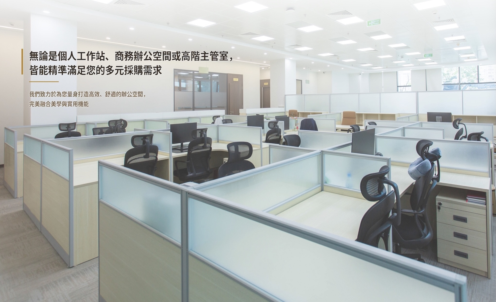

內容是否對準採購需求？
只列商品名稱，未必能回答尺寸、人數、選購與報價問題。先看既有文章是否貼近主推品類。
讓採購者搜尋時找得到，也能順利完成比較與詢問。
做了 2～3 個月 SEO，
下一步如何看見進展？
從採購需求出發，以選購內容逐步累積搜尋接觸。

SEO 需要讓內容逐步累積搜尋能見度；目前仍須核對既有工作，才能判斷渥金的進展。
只列商品名稱，未必能回答尺寸、人數、選購與報價問題。先看既有文章是否貼近主推品類。
從哪些問題開始被看見、哪些文章開始有點擊，觀察多個月份的變化，不以短期排名下結論。
讓選購文章接到現有分類、代表商品及詢價入口，協助採購者往下一步走。
2～3 個月未見明顯成長，不足以判定無效，也不能只等待。先確認內容方向，再持續累積；渥金既有選字與搜尋數據尚未取得。
官網以六大商品入口提供選購，並有大量採購與特殊規格詢價機制。
桌子、椅子、鐵櫃置物櫃、屏風工作站、推車工具車、辦公周邊用品。
訂購須知說明接單生產、配送及組裝條件。建議在品類與商品頁附近摘要連結，減少來回查找。
改善重點：把商品分類接上「尺寸怎麼選、到貨怎麼安排、怎麼取得報價」。
官網明列各型辦公室為服務客群。以下情境與角色為本案策略建議。
| 決策角色 | 搜尋情境 | 頁面需要回答 | 理想動作 |
|---|---|---|---|
| 行政／總務 | 新增座位或更換桌椅 | 尺寸、數量、系列差異、交期 | 提供品項與數量詢價 |
| 主管／經營者 | 搬遷、擴編或更新辦公空間 | 配置用途、採購範圍、交付條件 | 提出空間與交期需求 |
| 使用者／同仁 | 比較不同辦公椅 | 調整功能、材質、規格與適用情境 | 篩選合適商品 |
先爭取能描述明確需求的採購詢問，再共同追蹤有效商機。
這是官網已公開的客群，不代表已具備特定標案或共同供應契約資格。
辦公室、教職員工作區、訓練與會議空間，對應桌椅、文件櫃與收納。
讓商品尺寸、材質、發票與正式報價流程容易取得。各項資格只公布已核實文件。
建議詢問欄位收集品項、數量、送達地與所需時間，讓客服判斷是否能承接。
個人或居家辦公可由單品頁承接；企業與機關採購用需求表單銜接真人客服。
以下是建議建立的搜尋至詢問路徑，並非已量測的現行漏斗。
「辦公桌尺寸」
尺寸指南連回辦公桌分類
商品、配送與報價條件
帶入品項、數量與交期
SEO 改善到站與資訊承接；有效詢問、報價與成交須由網站及客服共同追蹤。
實際搜尋量支持品類與規格內容並行，不能把市場搜尋量當成渥金會得到的流量。
| 關鍵字 | 月搜尋量 | 廣告競爭／指數 | 頁首出價 NT$ |
|---|---|---|---|
| 辦公椅 | 14,800 | 高／100 | 2.56～19.33 |
| 辦公桌 | 9,900 | 高／100 | 8.19～26.24 |
| 辦公家具 | 3,600 | 高／73 | 12.50～41.80 |
| 會議桌 | 2,900 | 高／100 | 6.43～26.67 |
| 辦公桌尺寸 | 720 | 高／100 | 8.41～16.52 |
| 會議桌尺寸 | 590 | 高／100 | 2.24～15.87 |
建議：品類頁爭取商品需求，選購指南承接規格問題，再連回可購買或詢價的商品。
Google Ads 歷史月平均，2025/11–2026/10。台灣、繁體中文、Google Search、TWD。近似詞可能重疊，不加總為市場總量；廣告競爭不是 SEO 難度。
搜尋意圖：選購比較及採購。建議承接頁：辦公桌分類、會議桌分類、尺寸指南。
| 關鍵字 | 月搜尋量 | 廣告競爭／指數 | 頁首出價 NT$ |
|---|---|---|---|
| oa辦公桌 | 2,900 | 高／100 | 11.03～23.72 |
| 辦公桌尺寸 | 720 | 高／100 | 8.41～16.52 |
| 辦公桌高度 | 260 | 中／66 | 尚未取得 |
| 會議桌尺寸 | 590 | 高／100 | 2.24～15.87 |
| 折疊會議桌 | 720 | 高／100 | 2.32～17.06 |
| 6人會議桌 | 90 | 高／98 | 10.44～18.66 |
| 8人會議桌 | 70 | 高／95 | 10.07～17.35 |
文章方向：整合人數與尺寸比較，連到已確認可供應的會議桌；尺寸近義詞合併同一指南。
搜尋意圖：挑選適合的功能或收納方式。建議承接頁：既有椅類、公文櫃與活動櫃分類。
| 關鍵字 | 月搜尋量 | 廣告競爭／指數 | 頁首出價 NT$ |
|---|---|---|---|
| 人體工學椅 | 18,100 | 高／100 | 3.13～20.33 |
| 無扶手辦公椅 | 170 | 高／98 | 2.40～17.06 |
| 高背辦公椅 | 140 | 高／100 | 2.52～15.48 |
| 文件櫃 | 1,600 | 高／99 | 3.05～20.64 |
| 公文櫃 | 880 | 高／100 | 4.86～19.90 |
| 活動櫃 | 720 | 高／100 | 2.70～20.70 |
| 員工置物櫃 | 480 | 高／100 | 2.89～26.09 |
文章方向：以扶手、高低背及收納用途回答比較問題，連到現有且可供應的品項。
搜尋意圖：空間配置、工具整理與採購條件。這些字不因搜尋量較低就自動排除。
| 關鍵字 | 月搜尋量 | 廣告競爭／指數 | 頁首出價 NT$ |
|---|---|---|---|
| 屏風工作站 | 50 | 高／85 | 16.23～60.29 |
| 辦公屏風 | 140 | 高／97 | 11.44～32.93 |
| 工具車 | 1,900 | 高／100 | 2.33～16.81 |
| 工具推車 | 480 | 高／100 | 2.33～17.00 |
| 辦公家具型錄 | 50 | 高／80 | 10.21～17.95 |
| 辦公家具採購 | 尚未取得 | 尚未取得 | 尚未取得 |
| 辦公家具運費 | 尚未取得 | 尚未取得 | 尚未取得 |
選題前先核對工具車供應品項；「工作站」可能混入電腦需求，不單獨主攻。地區字只在配送與服務條件核實後採用。
候選是研究範圍，不代表合約篇數或正式選字。未回傳值為「尚未取得」。
以主推品類與採購問題選題，讓每篇文章有明確任務，並在合作期間逐步擴充。
由渥金確認主推的桌椅、收納或會議家具，優先選擇有供應能力、值得經營的需求。
從尺寸、人數、功能與採購流程切入；近似問題整合成一篇完整指南。
文章連到既有分類、代表商品與詢價入口，讓讀者從理解需求走向比較與聯絡。
以合約 10／15／20 篇安排內容，優先把核心主題做好，再依搜尋反應調整後續方向。
以「會議桌人數與尺寸怎麼選」為例，把共通問題集中回答，再帶到渥金現有商品。
整理使用人數、空間預留與桌型比較；引用尺寸須由渥金確認，搭配少量代表商品說明。
沿用現有分類與商品頁，讓讀者查看可供應款式、既有規格及報價方式。
服務以選定文章與約定頁面為範圍；商品資料由渥金提供與維護，全站商品逐件補寫另行評估。
同業啟發：震旦以 FAQ 回答採購問題、樹德以用途分類、IKEA 以辦公情境串接品類。這些是內容架構參考，並非本團隊客戶成效。
AIO 指 Google AI 摘要等搜尋呈現：可能先整理多個來源的答案，再提供相關連結。
用簡明段落回答「怎麼選」，搭配比較表與適用情境，讓讀者容易理解選購差異。
產品資訊經渥金確認，附對應分類或商品入口，讓讀者能查證並繼續比較。
內容會兼顧一般搜尋與 AI 搜尋的理解需求；AI 是否引用由搜尋系統決定，不保證展示。
本次以自然搜尋改善為主；是否另投廣告，由預算與急迫需求決定。
| 管道 | 主要用途 | 成本與控制 | 衡量方式 |
|---|---|---|---|
| SEO | 累積商品與選購內容的自然搜尋能見度 | 持續改善內容與網站，無法購買自然排名 | GSC 非品牌曝光、點擊及目標頁變化 |
| Google Ads | 測試急迫品類、短期促進詢問 | 媒體費另計，可調整投放與預算 | 實際廣告成本、有效詢問與報價 |
| AI 搜尋 | 讓搜尋者在整理答案時接觸品牌 | 延續 SEO 與可信資料，展示無法保證 | 可辨識來源流量與人工觀測分開記錄 |
AI 功能帶來的搜尋流量依 Google 說明納入 GSC 網頁搜尋，不能由總數直接拆成 AI 成效。
上架是累積的起點。執行分階段推進，搜尋成效以較長期間的趨勢判讀，沒有統一的達標月份。
確認主推品類、既有文章、基本網站範圍與可用資料，排定首批題目。
依核定題目研究、撰寫與審稿，連接現有商品入口；篇數依合約總量安排。
讓已上線內容持續被搜尋，觀察多個月份的曝光、點擊與需求變化。
依搜尋反應與渥金主推方向，調整後續選題及既有文章；定期溝通進度。
一年／兩年／三年是持續經營的合作期間；首批篇數、各批上線日期與溝通頻率於啟動時書面確認。
文章總量依一年 10 篇、兩年 15 篇或三年 20 篇執行；首批篇數與上線節奏於啟動時排定。
| 交付項目 | 具體內容 | 完成依據 |
|---|---|---|
| 關鍵字與題目規劃 | 依市場數據、搜尋意圖及主推品類選題 | 核定題目清單與數據來源 |
| 基本網站架設 | 品牌介紹、約定內容頁與聯絡入口；實作方式先與既有官網協調 | 約定頁面、正式網址與手機閱讀 |
| SEO 文章製作 | 選購指南、情境比較及採購問答，連到現有商品入口 | 審核稿、上架網址及合約篇數紀錄 |
| 進度與成效回顧 | 已完成內容、後續安排及搜尋趨勢 | 交付紀錄與有日期的成效報告 |
渥金提供商品事實、圖片與供應條件並確認稿件；團隊負責約定內容製作。全站商品建檔、逐件補規格及大量改寫另行評估。
首批題目方向：辦公桌尺寸與高度、會議桌人數與尺寸、公文櫃與活動櫃選購、辦公椅功能比較。實際題目須先核對既有內容。
內容交付按約定節奏確認；搜尋成效觀察多個月份的累積與波動，不以單月排名判定成敗。
| 觀察重點 | 看什麼 | 資料依據 |
|---|---|---|
| 內容累積 | 哪些題目已上線、哪些主題逐步完整 | 核定清單與文章網址 |
| 搜尋能見度 | 曝光、點擊、帶來流量的問題及文章變化 | Google Search Console，區分品牌／非品牌與日期 |
| 商機品質 | 詢問需求是否貼近供應品類，有沒有後續報價 | 網站互動及渥金客服紀錄；有追蹤資料才呈現 |
定期更新資料，綜合多月趨勢、內容上線時間與採購季節判讀；資料足夠時再看去年同期。點擊、有效詢問與成交分開記錄。
渥金目前排名、流量與詢問基準：尚未取得。後續以實際資料討論方向，不預填成長率或保證排名。
我們的客戶案例｜2025/08/20 開始優化。內容從挑選、比較與使用問題，連回產品需求。
2025 年 9–11 月每月僅 7、15、22 次點擊；2026 年多個月份超過千次，也有回落。只看初期幾個月，會看不到後續累積。
來源：公開案例最新 GSC 資料。完整統計 2025/08/21–2026/11/04：7,116 點擊、447,962 曝光（全站，含品牌及非品牌）。圖表排除不完整的首尾月份；不同產業、季節與行銷活動影響結果，非渥金成長時程或成效保證。
我們的客戶案例｜以估價、行情與買賣問題承接比較需求，讓搜尋者在做決定時接觸品牌。
全站自然搜尋點擊；同期搜尋曝光 687,130 次。統計期間 2025/09/17–2026/11/04。
「二手機車估價公式」單一查詢帶來的點擊；同期間 GSC 平均排名 1.78。
渥金可借鏡：從「會議桌幾人、尺寸怎麼選、櫃體怎麼比較」等決策問題切入，再連到既有商品與詢價入口。
來源：公開案例 GSC 最新資料。全站點擊含品牌與非品牌；單一查詢數據不是某篇文章的全部流量，平均排名也不是固定名次。案例並非家具業，不推估渥金流量、詢問或營收。
三案皆含基本網站架設。文章篇數為整個合作期間的總量，並非每年重複提供。
服務 12 個月 · SEO 文章共 10 篇
每期 NT$12,500
按最高期數計算
先建立核心選購內容
服務 24 個月 · SEO 文章共 15 篇
每期 NT$7,500
按最高期數計算
擴充主題群集，持續累積內容
服務 36 個月 · SEO 文章共 20 篇
每期 NT$10,000
按最高期數計算
配合較長期的品牌與產品經營
三年方案服務 36 個月、最多 24 期付款，每期 NT$10,000；約 NT$6,667 是以 36 個月平均的投入，並非每期應付金額。分期資格、實際付款安排及契約細節以正式簽約文件為準。
方案總價、文章篇數與基本網站架設：2026/11/13 專案確認。稅別及分期依現行方案規範。
依合作年期與總篇數選擇，逐步建立有助選購的內容資產。
| 共同服務 | 本案如何運用 |
|---|---|
| 基本網站架設 | 品牌介紹、約定內容頁與聯絡入口，配合手機閱讀；實作方式先與既有官網協調 |
| SEO 文章製作 | 共 10／15／20 篇，包含關鍵字研究、選題與內容製作，依核定節奏上架 |
| 搜尋與內容串接 | 文章連回既有分類、代表商品與詢價入口，讓讀者繼續比較 |
| 進度與趨勢回顧 | 說明內容完成進度，累積搜尋資料，依長期反應調整選題 |
商品資料由渥金提供與維護；全站商品建檔、逐件補寫及規格整理不包含在基本內容服務內，另依需求評估。
渥金已有官網，基本網站的頁面與實作範圍於啟動時書面確認；購物車、金流、會員、多語系與其他客製功能另行評估。首批篇數、審稿安排及雙方分工同步確認。
從值得經營的產品需求開始，按合作期間逐步累積搜尋內容。
依一年／兩年／三年的投入與文章總量選擇，確認付款安排與啟動日期。
確認重點品類，提供現有文章、代表商品及供應條件；可用的搜尋資料一併核對。
書面確認基本網站頁面、首批題目與篇數、審稿窗口及上線安排，持續分享內容進度與搜尋趨勢。